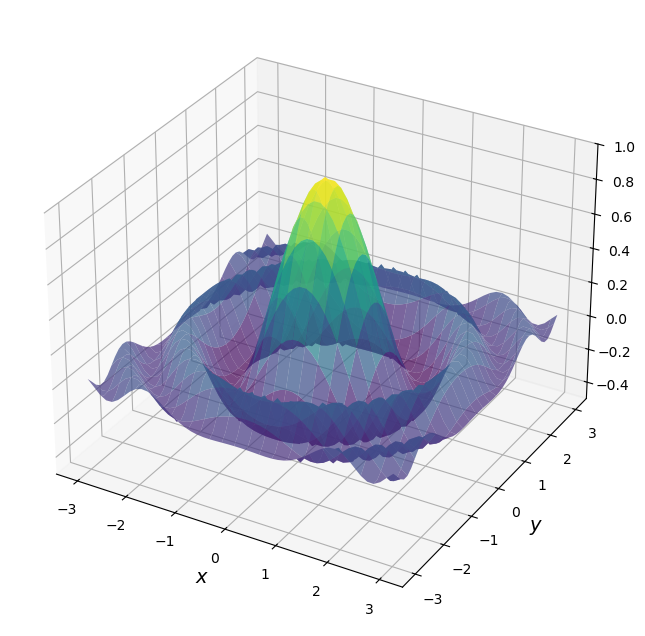

15. NumPy در مقابل Numba در مقابل JAX#
در درسهای قبلی، سه کتابخانه اصلی برای محاسبات علمی و عددی را بحث کردیم:
کدام یک را باید در هر موقعیت استفاده کنیم؟
این درس به آن سؤال پاسخ میدهد، حداقل تا حدی، با بحث در مورد برخی موارد استفاده.
قبل از شروع، توجه میکنیم که دو مورد اول یک جفت طبیعی هستند: NumPy و Numba به خوبی با هم کار میکنند.
JAX، از سوی دیگر، به تنهایی میایستد.
هنگام بررسی هر رویکرد، نه تنها کارایی و رد پای حافظه، بلکه وضوح و سهولت استفاده را نیز در نظر خواهیم گرفت.
علاوه بر آنچه در Anaconda موجود است، این درس به کتابخانههای زیر نیاز دارد:
!pip install quantecon jax
GPU
This lecture was built using a machine with access to a GPU — although it will also run without one.
Google Colab has a free tier with GPUs that you can access as follows:
Click on the “play” icon top right
Select Colab
Set the runtime environment to include a GPU
ما از import های زیر استفاده خواهیم کرد.
from functools import partial
import numpy as np
import numba
import quantecon as qe
import matplotlib.pyplot as plt
from mpl_toolkits.mplot3d.axes3d import Axes3D
from matplotlib import cm
import jax
import jax.numpy as jnp
from jax import lax
15.1. عملیات برداری شده#
برخی عملیات را میتوان به طور کامل برداری کرد — تمام حلقهها به راحتی حذف میشوند و عملیات عددی به محاسبات روی آرایهها تقلیل مییابند.
در این حالت، کدام رویکرد بهترین است؟
15.1.1. بیان مسئله#
مسئله بیشینهسازی تابع \(f\) از دو متغیر \((x,y)\) روی مربع \([-a, a] \times [-a, a]\) را در نظر بگیرید.
برای \(f\) و \(a\) بیایید انتخاب کنیم
در اینجا نمودار \(f\) آمده است
def f(x, y):
return np.cos(x**2 + y**2) / (1 + x**2 + y**2)
xgrid = np.linspace(-3, 3, 50)
ygrid = xgrid
x, y = np.meshgrid(xgrid, ygrid)
fig = plt.figure(figsize=(10, 8))
ax = fig.add_subplot(111, projection='3d')
ax.plot_surface(x,
y,
f(x, y),
rstride=2, cstride=2,
cmap=cm.viridis,
alpha=0.7,
linewidth=0.25)
ax.set_zlim(-0.5, 1.0)
ax.set_xlabel('$x$', fontsize=14)
ax.set_ylabel('$y$', fontsize=14)
plt.show()

به خاطر این تمرین، ما از روش brute force برای بیشینهسازی استفاده خواهیم کرد.
\(f\) را برای تمام \((x,y)\) در یک شبکه روی مربع ارزیابی کنید.
حداکثر مقادیر مشاهده شده را برگردانید.
فقط برای نشان دادن ایده، در اینجا یک نسخه غیر برداری شده است که از حلقههای Python استفاده میکند.
grid = np.linspace(-3, 3, 50)
m = -np.inf
for x in grid:
for y in grid:
z = f(x, y)
m = max(m, z)
15.1.2. برداریسازی NumPy#
بیایید به NumPy تغییر دهیم و از یک شبکه بزرگتر استفاده کنیم
grid = np.linspace(-3, 3, 3_000) # Large grid
به عنوان اولین گام برداریسازی ممکن است چیزی شبیه به این امتحان کنیم
# Large grid
z = np.max(f(grid, grid)) # This is wrong!
مشکل اینجا این است که f(grid, grid) از حلقه تودرتو پیروی نمیکند.
از نظر شکل بالا، این کد فقط مقادیر f را روی قطر محاسبه میکند.
برای اینکه NumPy را مجبور کنیم f(x,y) را روی هر جفت x,y محاسبه کند، باید از np.meshgrid استفاده کنیم.
در اینجا از np.meshgrid برای ایجاد شبکههای ورودی دوبعدی x و y استفاده میکنیم به گونهای که f(x, y) تمام ارزیابیها را روی شبکه حاصلضرب تولید میکند.
# Large grid
grid = np.linspace(-3, 3, 3_000)
x_mesh, y_mesh = np.meshgrid(grid, grid) # MATLAB style meshgrid
with qe.Timer():
z_max_numpy = np.max(f(x_mesh, y_mesh)) # This works
0.1333 seconds elapsed
در نسخه برداری شده، تمام حلقهها در کد کامپایل شده انجام میشوند.
استفاده از meshgrid به ما امکان میدهد حلقه for تودرتو را تکرار کنیم.
خروجی باید نزدیک به یک باشد:
print(f"NumPy result: {z_max_numpy:.6f}")
NumPy result: 0.999998
15.1.3. مشکلات حافظه#
پس ما راهحل صحیح را در زمان معقول داریم — اما مصرف حافظه بسیار زیاد است.
در حالی که آرایههای تخت حافظه کمی دارند
grid.nbytes
24000
شبکههای mesh دوبعدی هستند و از این رو از نظر حافظه بسیار فشردهاند
x_mesh.nbytes + y_mesh.nbytes
144000000
علاوه بر این، اجرای بلادرنگ NumPy آرایههای میانی زیادی با همان اندازه ایجاد میکند!
این نوع مصرف حافظه میتواند یک مشکل بزرگ در محاسبات تحقیقاتی واقعی باشد.
15.1.4. مقایسه با Numba#
بیایید ببینیم آیا میتوانیم با استفاده از Numba با یک حلقه ساده به عملکرد بهتری دست یابیم.
@numba.jit
def compute_max_numba(grid):
m = -np.inf
for x in grid:
for y in grid:
z = np.cos(x**2 + y**2) / (1 + x**2 + y**2)
m = max(m, z)
return m
بیایید آن را آزمایش کنیم:
grid = np.linspace(-3, 3, 3_000)
with qe.Timer():
# First run
z_max_numba = compute_max_numba(grid)
0.1811 seconds elapsed
بیایید دوباره اجرا کنیم تا زمان کامپایل حذف شود.
with qe.Timer():
# Second run
compute_max_numba(grid)
0.0887 seconds elapsed
توجه کنید که تقریباً هیچ حافظهای استفاده نمیکنیم — فقط به grid یکبعدی نیاز داریم.
علاوه بر این، سرعت اجرا خوب است.
در اکثر دستگاهها، نسخه Numba تا حدودی سریعتر از NumPy خواهد بود.
دلیل آن کد ماشین کارآمد به علاوه خواندن و نوشتن کمتر حافظه است.
15.1.5. Numba موازی شده#
حالا بیایید موازیسازی با Numba را با استفاده از prange امتحان کنیم:
@numba.jit(parallel=True)
def compute_max_numba_parallel(grid):
n = len(grid)
m = -np.inf
for i in numba.prange(n):
for j in range(n):
x = grid[i]
y = grid[j]
z = np.cos(x**2 + y**2) / (1 + x**2 + y**2)
m = max(m, z)
return m
در اینجا یک اجرای گرمکننده و آزمایش آمده است.
with qe.Timer():
# First run
z_max_parallel = compute_max_numba_parallel(grid)
0.4924 seconds elapsed
در اینجا زمانبندی برای نسخه از پیش کامپایل شده آمده است.
with qe.Timer():
# Second run
compute_max_numba_parallel(grid)
0.0390 seconds elapsed
اگر چندین هسته دارید، باید مزایایی از موازیسازی در اینجا ببینید.
بیایید مطمئن شویم که نتیجه صحیح را به دست میآوریم (نزدیک به یک):
print(f"Numba result: {z_max_parallel:.6f}")
Numba result: 0.999998
برای دستگاههای قدرتمند و اندازههای شبکه بزرگتر، موازیسازی میتواند افزایش سرعت مفیدی ایجاد کند، حتی روی CPU.
15.1.6. کد برداری شده با JAX#
بیایید رویکرد برداری شده NumPy را با JAX تکرار کنیم.
بیایید با تابع شروع کنیم که np را به jnp تغییر میدهد و jax.jit را اضافه میکند.
@jax.jit
def f(x, y):
return jnp.cos(x**2 + y**2) / (1 + x**2 + y**2)
از رویکرد meshgrid به سبک NumPy استفاده میکنیم:
grid = jnp.linspace(-3, 3, 3_000)
x_mesh, y_mesh = jnp.meshgrid(grid, grid)
حالا بیایید اجرا و زمانبندی کنیم
with qe.Timer():
# First run
z_max = jnp.max(f(x_mesh, y_mesh))
# Hold interpreter
z_max.block_until_ready()
print(f"Plain vanilla JAX result: {z_max:.6f}")
0.0477 seconds elapsed
Plain vanilla JAX result: 0.999998
بیایید دوباره اجرا کنیم تا زمان کامپایل حذف شود.
with qe.Timer():
# Second run
z_max = jnp.max(f(x_mesh, y_mesh))
# Hold interpreter
z_max.block_until_ready()
0.0225 seconds elapsed
پس از کامپایل، JAX به ویژه روی GPU به طور قابل توجهی سریعتر از NumPy است.
سربار کامپایل یک هزینه یکبار مصرف است که زمانی که تابع به طور مکرر فراخوانی میشود، بازگشت سرمایه دارد.
15.1.7. JAX به علاوه vmap#
چون از jax.jit در بالا استفاده کردیم، از ایجاد بسیاری از آرایههای میانی اجتناب کردیم.
اما همچنان آرایههای بزرگ z_max، x_mesh و y_mesh را ایجاد میکنیم.
خوشبختانه، میتوانیم با استفاده از jax.vmap از این اجتناب کنیم.
در اینجا نحوه اعمال آن به مسئله ما آمده است.
@jax.jit
def compute_max_vmap(grid):
# Construct a function that takes the max over all x for given y
compute_column_max = lambda y: jnp.max(f(grid, y))
# Vectorize the function so we can call on all y simultaneously
vectorized_compute_column_max = jax.vmap(compute_column_max)
# Compute the column max at every row
column_maxes = vectorized_compute_column_max(grid)
# Compute the max of the column maxes and return
return jnp.max(column_maxes)
توجه کنید که هرگز
شبکه دوبعدی
x_meshشبکه دوبعدی
y_meshیاآرایه دوبعدی
f(x,y)
را نمیسازیم.
مانند Numba، فقط از آرایه تخت grid استفاده میکنیم.
و چون همه چیز زیر یک @jax.jit واحد قرار دارد، کامپایلر میتواند تمام عملیات را در یک kernel بهینه ادغام کند.
بیایید آن را امتحان کنیم.
with qe.Timer():
# First run
z_max = compute_max_vmap(grid)
# Hold interpreter
z_max.block_until_ready()
print(f"JAX vmap result: {z_max:.6f}")
0.0590 seconds elapsed
JAX vmap result: 0.999998
بیایید دوباره اجرا کنیم تا زمان کامپایل حذف شود:
with qe.Timer():
# Second run
z_max = compute_max_vmap(grid)
# Hold interpreter
z_max.block_until_ready()
0.0158 seconds elapsed
15.1.8. خلاصه#
به نظر ما، JAX برنده برای عملیات برداری شده است.
هم از نظر سرعت (از طریق JIT-compilation و موازیسازی) و هم از نظر کارایی حافظه (از طریق vmap) بر NumPy غلبه میکند.
همچنین هنگام اجرا روی GPU بر Numba نیز غلبه میکند.
Note
Numba میتواند برنامهنویسی GPU را از طریق numba.cuda پشتیبانی کند، اما در آن صورت باید موازیسازی را به صورت دستی انجام دهیم. برای اکثر موارد مواجه شده در اقتصاد، اقتصادسنجی و امور مالی، بسیار بهتر است که برای موازیسازی کارآمد به کامپایلر JAX تحویل دهیم تا اینکه سعی کنیم این روالها را خودمان به صورت دستی کدنویسی کنیم.
15.2. عملیات ترتیبی#
برخی عملیات ذاتاً ترتیبی هستند – و از این رو برداری کردن آنها دشوار یا غیرممکن است.
در این حالت NumPy گزینه ضعیفی است و ما با انتخاب Numba یا JAX باقی میمانیم.
برای مقایسه این انتخابها، مسئله تکرار روی نقشه درجه دوم را که در سخنرانی Numba خود دیدیم، دوباره بررسی خواهیم کرد.
15.2.1. نسخه Numba#
در اینجا نسخه Numba آمده است.
@numba.jit
def qm(x0, n, α=4.0):
x = np.empty(n+1)
x[0] = x0
for t in range(n):
x[t+1] = α * x[t] * (1 - x[t])
return x
بیایید یک سری زمانی به طول 10,000,000 تولید کنیم و اجرا را زمانبندی کنیم:
n = 10_000_000
with qe.Timer():
x = qm(0.1, n)
0.0842 seconds elapsed
بیایید دوباره اجرا کنیم تا زمان کامپایل حذف شود:
with qe.Timer():
x = qm(0.1, n)
0.0200 seconds elapsed
Numba این عملیات ترتیبی را به طور بسیار کارآمد مدیریت میکند.
15.2.2. نسخه JAX#
ما نمیتوانیم مستقیماً numba.jit را با jax.jit جایگزین کنیم زیرا آرایههای JAX تغییرناپذیر هستند.
اما میتوانیم این عملیات را پیادهسازی کنیم.
15.2.2.1. تلاش اول#
در اینجا یک راهحل با استفاده از سینتکس at[t].set ارائه میشود که در درس JAX بحث شد.
ما از lax.fori_loop استفاده میکنیم که نسخهای از حلقه for است که میتواند توسط XLA کامپایل شود.
cpu = jax.devices("cpu")[0]
# Pin the input to the CPU, which keeps the whole computation there
x0_cpu = jax.device_put(0.1, cpu)
@partial(jax.jit, static_argnames=("n",))
def qm_jax_fori(x0, n, α=4.0):
x = jnp.empty(n + 1).at[0].set(x0)
def update(t, x):
return x.at[t + 1].set(α * x[t] * (1 - x[t]))
x = lax.fori_loop(0, n, update, x)
return x
ما
nرا ایستا نگه میداریم زیرا بر اندازه آرایه تأثیر میگذارد و از این رو JAX میخواهد روی مقدار آن در کد کامپایل شده تخصصی شود.ما ورودی را با
jax.device_putبه CPU متصل میکنیم (که کل محاسبات را روی CPU نگه میدارد) زیرا این بار کاری ترتیبی از بسیاری عملیات کوچک تشکیل شده است که فرصت کمی برای موازیسازی GPU باقی میگذارد.
مهم: اگرچه at[t].set در هر مرحله ظاهراً یک آرایه جدید ایجاد میکند، در داخل یک تابع کامپایلشده با JIT، کامپایلر تشخیص میدهد که آرایه قدیمی دیگر مورد نیاز نیست و بهروزرسانی را در جا انجام میدهد!
بیایید آن را با همان پارامترها زمانبندی کنیم:
with qe.Timer():
# First run
x_jax = qm_jax_fori(x0_cpu, n)
# Hold interpreter
x_jax.block_until_ready()
0.0902 seconds elapsed
بیایید دوباره اجرا کنیم تا سربار کامپایل حذف شود:
with qe.Timer():
# Second run
x_jax = qm_jax_fori(x0_cpu, n)
# Hold interpreter
x_jax.block_until_ready()
0.0509 seconds elapsed
JAX نیز برای این عملیات ترتیبی کاملاً کارآمد است!
15.2.2.2. تلاش دوم#
روش دیگری برای پیادهسازی حلقه وجود دارد که از lax.scan استفاده میکند.
این روش جایگزین، به طور قابل بحث، بیشتر با رویکرد تابعی JAX همسو است — اگرچه سینتکس آن به خاطر سپردن دشواری دارد.
@partial(jax.jit, static_argnames=("n",))
def qm_jax_scan(x0, n, α=4.0):
def update(x, t):
x_new = α * x * (1 - x)
return x_new, x_new
_, x = lax.scan(update, x0, jnp.arange(n))
return jnp.concatenate([jnp.array([x0]), x])
این کد خواندن آسانی ندارد اما، در اصل، lax.scan به طور مکرر update را فراخوانی میکند و بازگشتهای x_new را در یک آرایه جمع میکند.
بیایید آن را با همان پارامترها زمانبندی کنیم:
with qe.Timer():
# First run
x_jax = qm_jax_scan(x0_cpu, n)
# Hold interpreter
x_jax.block_until_ready()
0.0911 seconds elapsed
بیایید دوباره اجرا کنیم تا سربار کامپایل حذف شود:
with qe.Timer():
# Second run
x_jax = qm_jax_scan(x0_cpu, n)
# Hold interpreter
x_jax.block_until_ready()
0.0475 seconds elapsed
شگفتانگیز است که JAX نیز پس از کامپایل عملکرد قوی ارائه میدهد.
15.2.3. خلاصه#
در حالی که هم Numba و هم JAX عملکرد قوی برای عملیات ترتیبی ارائه میدهند، تفاوتهایی در خوانایی کد و سهولت استفاده وجود دارد.
نسخه Numba ساده و طبیعی برای خواندن است: ما به سادگی یک آرایه اختصاص میدهیم و آن را عنصر به عنصر با استفاده از یک حلقه استاندارد Python پر میکنیم.
این دقیقاً نحوه تفکر اکثر برنامهنویسان در مورد الگوریتم است.
نسخههای JAX، از سوی دیگر، نیاز به استفاده از lax.fori_loop یا lax.scan دارند که هر دو کمتر شهودی از یک حلقه استاندارد Python هستند.
در حالی که سینتکس at[t].set در JAX بهروزرسانی عنصر به عنصر را ممکن میسازد، کد کلی همچنان سختتر از معادل Numba برای خواندن است.
15.3. توصیههای کلی#
حال قدمی به عقب بر میداریم و مبادلات را خلاصه میکنیم.
برای عملیات برداریسازیشده، JAX قویترین انتخاب است.
به لطف کامپایل JIT و موازیسازی کارآمد روی CPU و GPU، در سرعت با NumPy برابری میکند یا از آن پیشی میگیرد.
تبدیل vmap مصرف حافظه را کاهش میدهد و اغلب نسبت به برداریسازی سنتی مبتنی بر meshgrid، کد روشنتری ارائه میدهد.
علاوه بر این، توابع JAX بهصورت خودکار مشتقپذیر هستند، همانطور که در ماجراهایی با مشتقگیری خودکار بررسی میکنیم.
برای عملیات ترتیبی، Numba نحو بهتری دارد.
کد طبیعی و خوانا است — صرفاً یک حلقه پایتون با یک decorator — و کارایی آن عالی است.
JAX میتواند مسائل ترتیبی را از طریق lax.fori_loop یا lax.scan مدیریت کند، اما نحو آن کمتر شهودی است.
از سوی دیگر، نسخههای JAX از مشتقگیری خودکار پشتیبانی میکنند.
این ممکن است جالب توجه باشد اگر، برای مثال، بخواهیم حساسیتهای یک مسیر را نسبت به پارامترهای مدل محاسبه کنیم.